Diseño y Construcción de DataWarehouse
Marcelo Casiraghi
Martín Rodríguez Blanco
10 de Julio de 2012
Contenido:
- Diseño Conceptual
- Diseño Lógico
- Implementación de relaciones dimensionales y dimensiones
- Proceso de carga
- Reportes
Diseño y Construcción de DataWarehouse. InCo - FIng - UDeLaR
1. Diseño Conceptual
Diseño y Construcción de DataWarehouse. InCo - FIng - UDeLaR
Dimensión Geografía
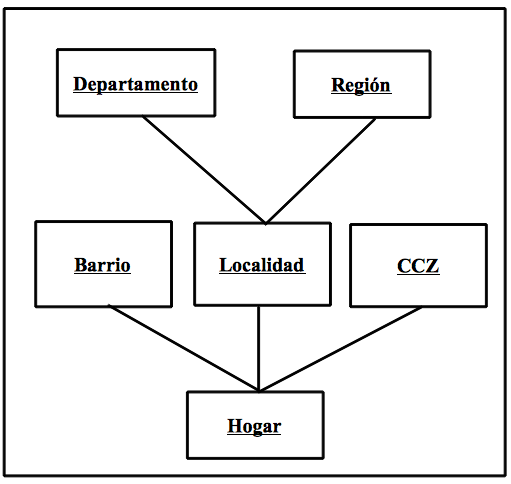
Diseño y Construcción de DataWarehouse. InCo - FIng - UDeLaR
Dimensión Tiempo
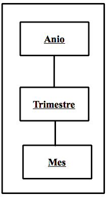
Diseño y Construcción de DataWarehouse. InCo - FIng - UDeLaR
Dimensión Niveles de Confort
Dimensión Tipos de Vivienda
Diseño y Construcción de DataWarehouse. InCo - FIng - UDeLaR
Relación Dimensional 'Información de Hogares'
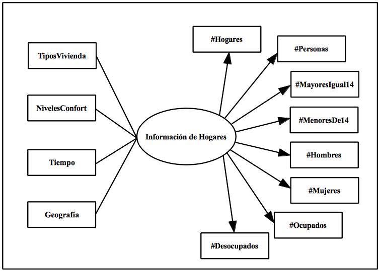
Diseño y Construcción de DataWarehouse. InCo - FIng - UDeLaR
Dimensión Ocupaciones
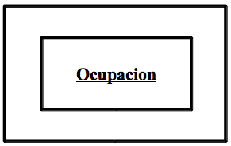
Dimensión Educación
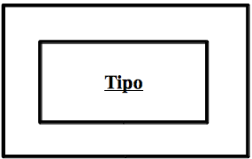
Dimensión Salud
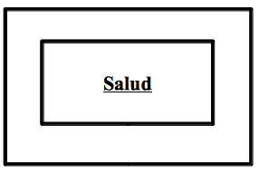
Dimensión Sexos
Relación Dimensional 'Información de Personas'
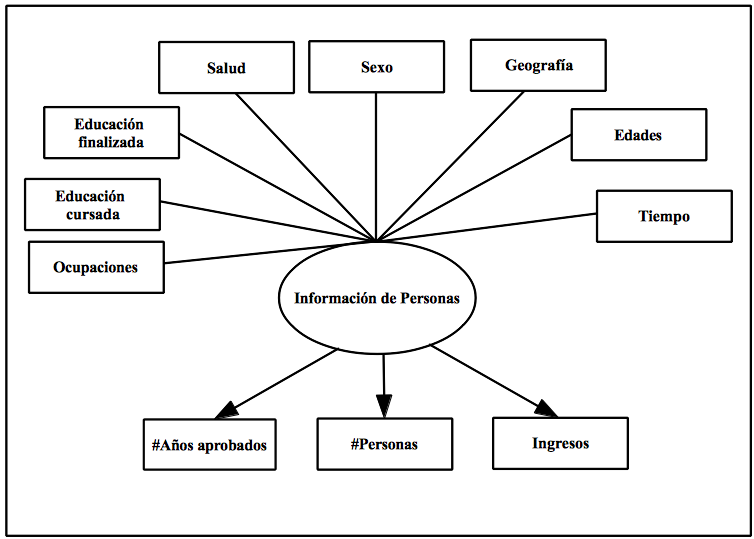
Diseño y Construcción de DataWarehouse. InCo - FIng - UDeLaR
Dimensión Tics
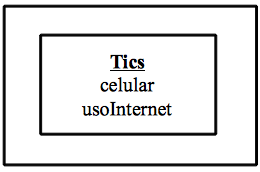
Diseño y Construcción de DataWarehouse. InCo - FIng - UDeLaR
Relación Dimensional 'Información de Tics'
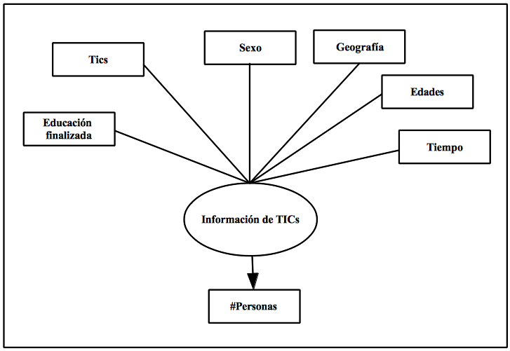
Diseño y Construcción de DataWarehouse. InCo - FIng - UDeLaR
Dimensión Ascendencia Racial
Dimensión Rango de Ingresos
Relación Dimensional 'Información de Ingreso Racial'
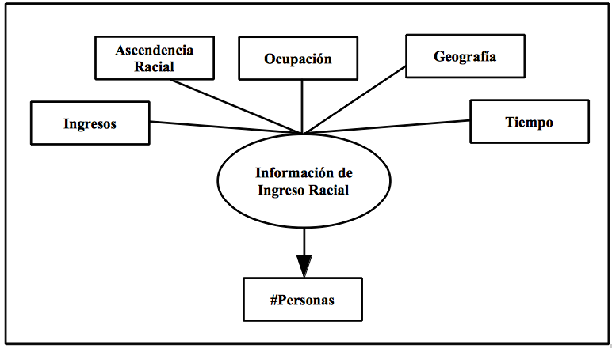
Diseño y Construcción de DataWarehouse. InCo - FIng - UDeLaR
2. Diseño Lógico
Diseño y Construcción de DataWarehouse. InCo - FIng - UDeLaR
Diseño Lógico
- Servidor OLAP Mondrian de tipo ROLAP.
- MySQL Workbench para crear diagramas de tablas.
- No se realizó fragmentación vertical ni horizontal.
- Esquema estrella para tabla de hechos.
Diseño y Construcción de DataWarehouse. InCo - FIng - UDeLaR
Información de Hogares
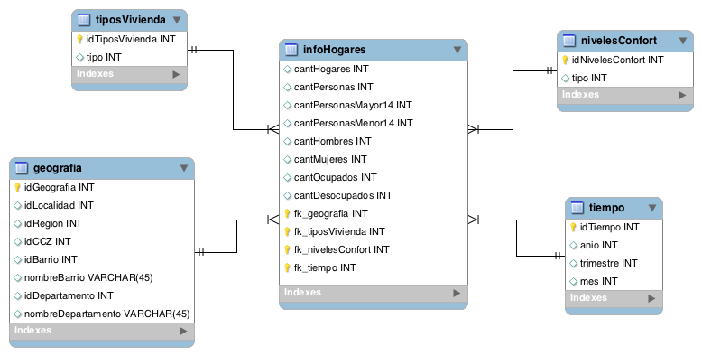
Diseño y Construcción de DataWarehouse. InCo - FIng - UDeLaR
3. Implementación de Relaciones Dimensionales y Dimensiones
Diseño y Construcción de DataWarehouse. InCo - FIng - UDeLaR
Implementación de Relaciones Dimensionales y Dimensiones
- Base de datos ECH_DW.
- Carga con scripts autogenerados por MySQL Workbench.
- Con Kettle cargamos datos en ECH_DW.
- Schema Workbench para diseño de cubos.
Diseño y Construcción de DataWarehouse. InCo - FIng - UDeLaR
Diseño de cubos con Schema Workbench
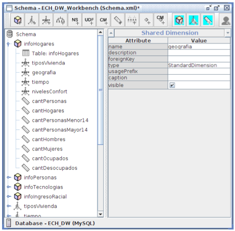
Diseño y Construcción de DataWarehouse. InCo - FIng - UDeLaR
4. Proceso de Carga
Diseño y Construcción de DataWarehouse. InCo - FIng - UDeLaR
Proceso de carga
- Herramienta Kettle de Pentaho.
- Creación de transformaciones con steps.
- Algoritmos de carga en los steps JavaScript.
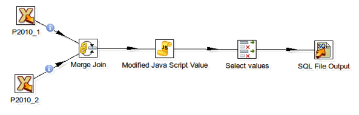
Diseño y Construcción de DataWarehouse. InCo - FIng - UDeLaR
Proceso de carga
var idGeografia = parseInt('2009' + parseInt(NUMERO, 10));
var idHogar = parseInt(NUMERO, 10);
var idBarrio;
var nombreBarrio;
if (parseInt(BARRIO, 10) == 0){
idBarrio = nombreBarrio = null;
} else{
idBarrio = parseInt(BARRIO, 10);
nombreBarrio = NOMBARRIO;
}
var idCCZ;
if (parseInt(CCZ, 10) == 0){
idCCZ = null;
} else{
idCCZ = parseInt(CCZ, 10);
}
Diseño y Construcción de DataWarehouse. InCo - FIng - UDeLaR
5. Reportes
Diseño y Construcción de DataWarehouse. InCo - FIng - UDeLaR
Reportes
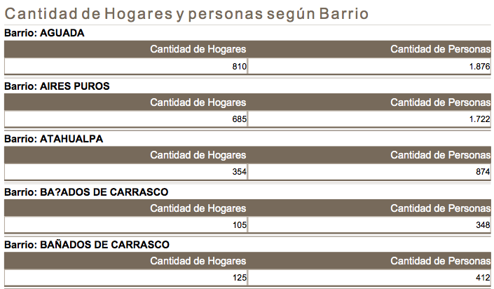
Diseño y Construcción de DataWarehouse. InCo - FIng - UDeLaR